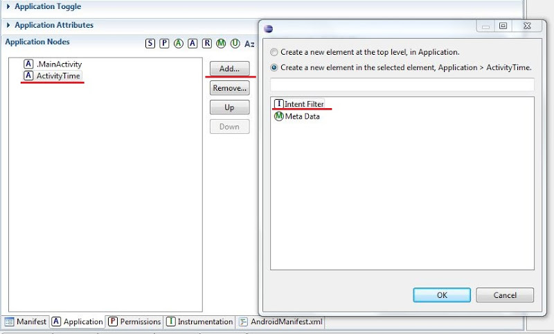
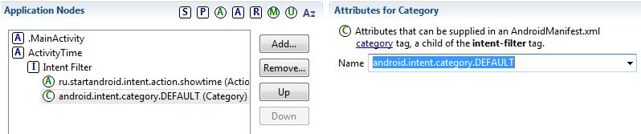
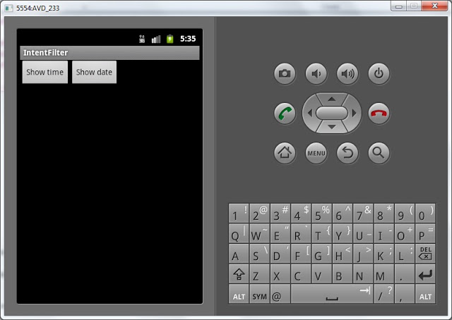
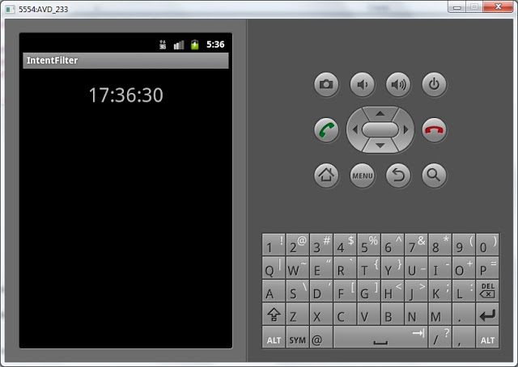
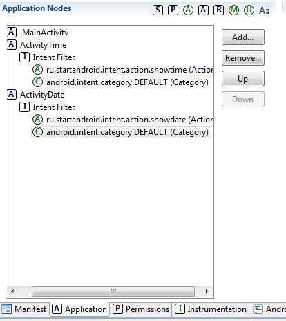
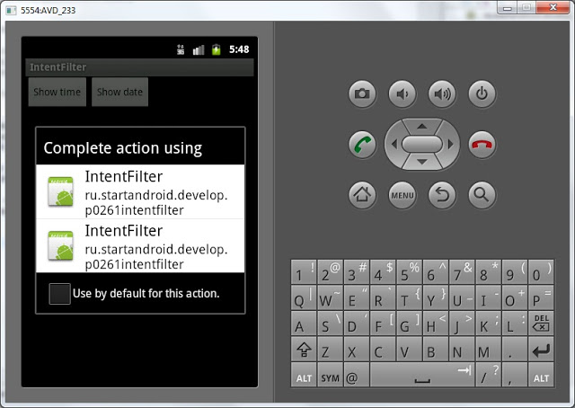
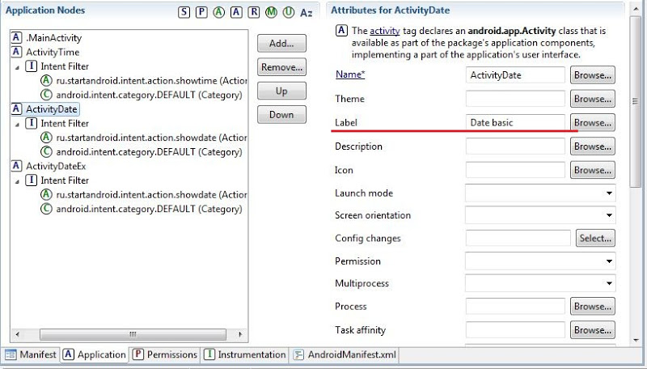
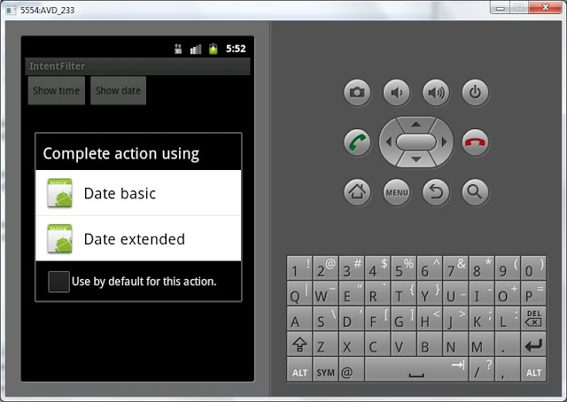
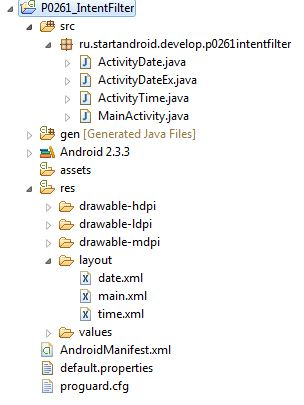

В этом уроке:
- вызываем Activity, используя неявный вызов и Intent Filter
Последние уроки получились перегруженными теорией. Эту теорию необходимо понять, чтобы не было проблем с практикой. Эти темы являются основой – Task, Lifecycle, Intent. Если что-либо осталось непонятно, то вы всегда можете снова открыть и перечитать материал. А далее мы будем реализовывать примеры, которые будут эту теорию подтверждать и все станет понятнее.
На прошлых уроках мы научились вызывать Activity с помощью Intent и явного указания класса. Также мы знаем, что есть и другой способ вызова Activity – неявный. Он основан на том, что Activity вызывается не по имени, а по функционалу. Т.е. мы хотим выполнить определенные действия, создаем и настраиваем соответствующий Intent и отправляем его искать те Activity, которые могли бы справиться с нашей задачей.
Давайте посмотрим, как это реализуется на практике. Мы создадим приложение, которое будет отображать нам текущее время или дату. Сделаем мы это с помощью трех Activity:
- первое будет содержать две кнопки: Show time и Show date
- второе будет отображать время
- третье будет отображать дату
Нажатие на кнопку Show time будет вызывать второе Activity, а нажатие на кнопку Show date – третье Activity. Но реализуем мы это не через прямое указание классов Activity в Intent, а через Intent Filter.
Создадим проект:
Project name: P0261_IntentFilter
Build Target: Android 4.0
Application name: IntentFilter
Package name: ru.startandroid.develop.p0261intentfilter
Create Activity: MainActivity
Открываем main.xml и рисуем две кнопки:
<?xml version="1.0" encoding="utf-8"?>
<LinearLayout
xmlns:android="http://schemas.android.com/apk/res/android"
android:layout_width="fill_parent"
android:layout_height="fill_parent"
android:orientation="horizontal">
<Button
android:layout_width="wrap_content"
android:layout_height="wrap_content"
android:id="@+id/btnTime"
android:text="Show time">
</Button>
<Button
android:layout_width="wrap_content"
android:layout_height="wrap_content"
android:id="@+id/btnDate"
android:text="Show date">
</Button>
</LinearLayout>Пишем реализацию MainActivity.java:
package ru.startandroid.develop.p0261intentfilter;
import android.app.Activity;
import android.content.Intent;
import android.os.Bundle;
import android.view.View;
import android.view.View.OnClickListener;
import android.widget.Button;
public class MainActivity extends Activity implements OnClickListener {
/** Called when the activity is first created. */
@Override
public void onCreate(Bundle savedInstanceState) {
super.onCreate(savedInstanceState);
setContentView(R.layout.main);
Button btnTime = (Button) findViewById(R.id.btnTime);
Button btnDate = (Button) findViewById(R.id.btnDate);
btnTime.setOnClickListener(this);
btnDate.setOnClickListener(this);
}
@Override
public void onClick(View v) {
Intent intent;
switch(v.getId()) {
case R.id.btnTime:
intent = new Intent("ru.startandroid.intent.action.showtime");
startActivity(intent);
break;
case R.id.btnDate:
intent = new Intent("ru.startandroid.intent.action.showdate");
startActivity(intent);
break;
}
}
}В коде мы определили кнопки и присвоили им Activity как обработчик нажатий. В методе onCilck мы определяем какая кнопка была нажата и создаем Intent.
Для создания Intent используем конструктор: Intent (String action). Т.е. мы при создании заполняем атрибут объекта Intent, который называется action. Это обычная строковая константа. Action обычно указывает действие, которое мы хотим произвести. Например, есть следующие системные action-константы: ACTION_VIEW - просмотр, ACTION_EDIT – редактирование, ACTION_PICK – выбор из списка, ACTION_DIAL – сделать звонок.
Если действие производится с чем-либо, то в пару к action идет еще один Intent-атрибут – data. В нем мы можем указать какой-либо объект: пользователь в адресной книге, координаты на карте, номер телефона и т.п. Т.е. action указывает что делать, а data – с чем делать.
Про data мы еще поговорим на следующих уроках, а пока будем использовать только action. Выше я уже перечислил некоторые системные action-константы, но мы можем использовать и свой action.
Как вы видите из кода, я придумал и использую такие action:
ru.startandroid.intent.action.showtime
ru.startandroid.intent.action.showdate
Первый будет означать, что я хочу вызвать Activity, которое мне покажет текущее время. Второй – Activity с датой.
Здесь надо четко понимать следующее: action – это просто текст. И я мог с таким же успехом придумать action abcdefg123456. Но текст showtime – отражает то, что я хочу сделать, он нагляднее и понятнее. А префикс ru.startandroid.intent.action я использую, чтобы не было коллизий. В системе может быть приложение, которое уже использует action showtime - я не хочу с ним пересекаться. Поэтому мой action – это ru.startandroid.intent.action.showtime.
Итак, мы создали Intent с action и запустили его в систему искать Activity. Чтобы Activity подошла, надо чтобы ее Intent Filter содержал атрибут action с тем же значением, что и action в Intent. Значит нам осталось создать две Activity, настроить их Intent Filter и реализовать отображение времени и даты.
Activity создается как обычно - создаем класс ActivityTime с суперклассом android.app.Activity и прописываем его в манифесте как Activity. После того, как прописали в манифесте, надо будет там же создать Intent Filter. Для этого выделяем ActivityTime, жмем Add, выбираем Intent Filter и жмем ОК.

Далее в Intent Filter аналогично создаем Action и в поле Name прописываем ru.startandroid.intent.action.showtime

Также в Intent Filter надо создать Category и в поле name выбрать из списка android.intent.category.DEFAULT. Пока не будем разбираться детально зачем она нужна. Но без этого вызов startActivity(Intent) не найдет Activity.

Создадим layout для нового Activity, назовем его time.xml:
<?xml version="1.0" encoding="utf-8"?>
<LinearLayout
xmlns:android="http://schemas.android.com/apk/res/android"
android:layout_width="match_parent"
android:layout_height="match_parent"
android:orientation="vertical">
<TextView
android:layout_width="wrap_content"
android:layout_height="wrap_content"
android:id="@+id/tvTime"
android:text="TextView"
android:layout_gravity="center_horizontal"
android:layout_marginTop="20dp"
android:textSize="30sp">
</TextView>
</LinearLayout>Пишем код в ActivityTime.java:
package ru.startandroid.develop.p0261intentfilter;
import java.sql.Date;
import java.text.SimpleDateFormat;
import android.app.Activity;
import android.os.Bundle;
import android.widget.TextView;
public class ActivityTime extends Activity {
@Override
protected void onCreate(Bundle savedInstanceState) {
super.onCreate(savedInstanceState);
setContentView(R.layout.time);
SimpleDateFormat sdf = new SimpleDateFormat("HH:mm:ss");
String time = sdf.format(new Date(System.currentTimeMillis()));
TextView tvTime = (TextView) findViewById(R.id.tvTime);
tvTime.setText(time);
}
}Тут все просто - вычисляем текущее время и показываем его в TextView.
Все сохраним и запустим приложение.

Жмем кнопку Show time:

отобразилось время. Т.е. Intent с action = ru.startandroid.intent.action.showtime нашел и отобразил Activity, у которого action также равен ru.startandroid.intent.action.showtime в Intent Filter.
Вернемся назад (кнопка Back) и нажмем теперь кнопку Show date. Приложение выдаст ошибку, т.к. оно не смогло найти Activity, которое соответствовало бы Intent с action = ru.startandroid.intent.action.showdate (мы создали только для showtime).
Давайте создадим такое Activity, назовем его ActivityDate. Действия все те же самые, что и при создании ActivityTime:
- создание класса
- создание Activity в манифесте и создание для него Intent Filter (c action = ru.startandroid.intent.action.showdate и category = android.intent.category.DEFAULT)

Layout-файл назовем date.xml:
<?xml version="1.0" encoding="utf-8"?>
<LinearLayout
xmlns:android="http://schemas.android.com/apk/res/android"
android:layout_width="match_parent"
android:layout_height="match_parent"
android:orientation="vertical">
<TextView
android:layout_width="wrap_content"
android:layout_height="wrap_content"
android:id="@+id/tvDate"
android:text="TextView"
android:layout_gravity="center_horizontal"
android:layout_marginTop="20dp"
android:textSize="30sp">
</TextView>
</LinearLayout>Код ActivityDate.java:
package ru.startandroid.develop.p0261intentfilter;
import java.sql.Date;
import java.text.SimpleDateFormat;
import android.app.Activity;
import android.os.Bundle;
import android.widget.TextView;
public class ActivityDate extends Activity {
@Override
protected void onCreate(Bundle savedInstanceState) {
super.onCreate(savedInstanceState);
setContentView(R.layout.date);
SimpleDateFormat sdf = new SimpleDateFormat("dd.MM.yyyy");
String date = sdf.format(new Date(System.currentTimeMillis()));
TextView tvDate = (TextView) findViewById(R.id.tvDate);
tvDate.setText(date);
}
}Все сохраняем, запускаем приложение, жмем Show date и видим дату. Это значит, что Intent с action = ru.startandroid.intent.action.showdate нашел и отобразил ActivityDate подходящее ему по Intent Filter.
Чтобы закрепить тему, проделаем еще кое-то. Если помните, в уроке №22, где я рассказывал про Intent Filter, я говорил, что один Intent может найти несколько подходящих Activity. В этом случае пользователю предоставляется выбор, какое Activity использовать. Давайте сами спровоцируем такой случай. Мы сделаем еще одно Activity, которое будет реагировать на Intent с action = ru.startandroid.intent.action.showdate. И будет отображать текущую дату аналогично ActivityDate. Но формат отображения даты будет немного другой.
Давайте создадим такое Activity, назовем его ActivityDateEx. Действия все те же самые, что и при создании ActivityDate:
- создание класса
- создание Activity в манифесте и создание для него Intent Filter (с action = ru.startandroid.intent.action.showdate и category = android.intent.category.DEFAULT)
Новый layout-файл создавать не будем, используем уже существующий date.xml. В принципе, все три Activity у нас могли использовать один layout, т.к. они совершенно одинаковы – один TextView.
Код ActivityDateEx.java:
package ru.startandroid.develop.p0261intentfilter;
import java.sql.Date;
import java.text.SimpleDateFormat;
import android.app.Activity;
import android.os.Bundle;
import android.widget.TextView;
public class ActivityDateEx extends Activity {
@Override
protected void onCreate(Bundle savedInstanceState) {
super.onCreate(savedInstanceState);
setContentView(R.layout.date);
SimpleDateFormat sdf = new SimpleDateFormat("EEE, MMM d, yyyy");
String date = sdf.format(new Date(System.currentTimeMillis()));
TextView tvDate = (TextView) findViewById(R.id.tvDate);
tvDate.setText(date);
}
}Как видим, отличие от ActivityDate только в формате даты.
Сохраним все и запустим. Жмем Show date и видим такой выбор:

Intent нашел два Activity, но показал для каждого из них название родительского приложения и package. В нашем случае – оба Activity из нашего приложения, поэтому текст одинаков и не разберешь, какое из них какое. Давайте пофиксим это, прописав нормальные имена.
Нажмите Back, чтобы закрыть диалог выбора. Идем в манифест и для Activity пропишем label:

Date basic для ActivityDate
Date extended для ActivityDateEx
Сохраняем и запускаем. Жмем Show date и видим такой выбор:

Так значительно лучше. Жмем Date extended и видим дату в расширенном формате на ActivityDateEx.
Итак, мы создавали и посылали Intent с action. Этот Intent находил Activity с подходящим Intent Filter и отображал его. Если находил несколько – давал выбор. Примеры отлично показывают механизм.
Если запутались, чего и где создавать, привожу скрин проекта и содержимое манифеста.

Содержимое манифеста (вкладка AndroidManifest.xml):
<?xml version="1.0" encoding="utf-8"?>
<manifest xmlns:android="http://schemas.android.com/apk/res/android" package="ru.startandroid.develop.p0261intentfilter" android:versionCode="1" android:versionName="1.0">
<uses-sdk android:minSdkVersion="10"></uses-sdk>
<application android:icon="@drawable/icon" android:label="@string/app_name">
<activity android:name=".MainActivity" android:label="@string/app_name">
<intent-filter>
<action android:name="android.intent.action.MAIN"></action>
<category android:name="android.intent.category.LAUNCHER"></category>
</intent-filter>
</activity>
<activity android:name="ActivityTime">
<intent-filter>
<action android:name="ru.startandroid.intent.action.showtime"></action>
<category android:name="android.intent.category.DEFAULT"></category>
</intent-filter>
</activity>
<activity android:name="ActivityDate" android:label="Date basic">
<intent-filter>
<action android:name="ru.startandroid.intent.action.showdate"></action>
<category android:name="android.intent.category.DEFAULT"></category>
</intent-filter>
</activity>
<activity android:name="ActivityDateEx" android:label="Date extended">
<intent-filter>
<action android:name="ru.startandroid.intent.action.showdate"></action>
<category android:name="android.intent.category.DEFAULT"></category>
</intent-filter>
</activity>
</application>
</manifest>